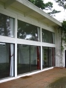
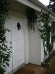

A couple moving from the suburbs of Sherman Oaks to the rural retreat of Topanga Canyon had a number of minor complaints about their new home. It wasn't well enough insulated, the windows leaked and didn't slide well, and the front door felt dated and not appropriate to the way the spaces in the house actually worked.
With minor direction from our studio, a contractor addressed all of these issues, replacing the doors and windows, removing the useless solar pool heater from the roof and replacing the roof. We specified that the upper windows of the set looking toward the ocean should be operable to allow for movement of the air in the large double-height space.

